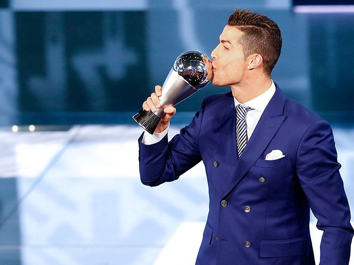

Пеле назвал преимущества Неймара перед Роналду
Трехкратный чемпион мира в составе сборной Бразилии Пеле выразил мнение, что нападающий «Барселоны» Неймар превосходит форварда «Реала» Криштиану Роналду в технике. Слова Пеле приводит UOL.
«Роналду не сильнее Неймара. Единственная проблема в игре Неймара — действия "на втором этаже". В плане техники Неймар намного превосходит Роналду, но Криштиану сильнее в игре головой. Мы не видели Неймара забивающим ударом головой. А это важно», — заявил Пеле. Роналду был признан лучшим молодым игроком чемпионата Европы 2004 года. Чемпион английской Премьер-лиги сезонов 2006/07 (лучший игрок и лучший молодой игрок сезона), 2007/08 (лучший игрок сезона) и 2008/09. В сезоне 2006/07 дошёл с «Манчестер Юнайтед» до полуфинала Лиги чемпионов, а в следующем сезоне выиграл в финале у лондонского «Челси». Обладатель «Золотой бутсы» 2008, 2011, 2014 и 2015 годов. В 2008 году был признан лучшим футболистом года в клубном европейском футболе по версии УЕФА и лучшим игроком Лиги чемпионов, получил «Золотой мяч» как лучший футболист Европы и награду «Игрок года ФИФА» как лучший футболист мира. В январе 2015 года стал обладателем своего третьего «Золотого мяча», как лучший футболист мира в 2014 году.
Неймар подписал контракт с «Барселоной» в мае 2013 года. В составе команды бразилец стал двукратным чемпионом Испании, а также победителем Лиги чемпионов в сезоне-2014/2015. В текущем сезоне 24-летний форвард отметился 9 мячами в 24 матчах в составе сине-гранатовых во всех турнирах. Лучший бомбардир Кубка Испании: 2014/15
Роналду выступает за «Реал» с 2009 года. 12 декабря Роналду в четвертый раз в карьере получил «Золотой мяч» — приз лучшему игроку мира по итогам года по версии журнала France Football. В 2016 году португалец в составе «Реала» выиграл Лигу чемпионов, а вместе со сборной Португалии — чемпионат Европы. В нынешнем сезоне на счету 31-летнего португальца 20 мячей в 25 матчах за «Реал» во всех турнирах.
